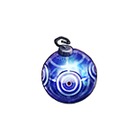
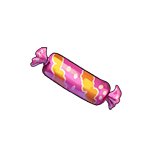
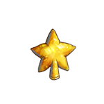

Получено: файл; исходный URL. Иллюстрация «Ёлочная коллекция» из каталога ViveR_9, сопоставлена по точному названию; возможны отличия версий. Оригинальный файл без перекодирования; авторство отдельно не установлено. Страница: источник.
Ёлочная коллекция
VK / социальная версия; 25.02.2013- Тип
- Коллекции
- Версия и дата
- VK / социальная версия; 25.02.2013
Элементы коллекции



Данные по источнику · VK / социальная версия · 25.02.2013
Предварительно: один источник; требует сверки. Требуется сверка.
- Награда
- Лента для скотча и 5 000 монет.
- Где копать
- Ёлка, пирамида Майя, снеговик, фонарь раз, флаг марафонца, марафонец, бригада, бригада Элвиса, фонтан, часовня, рука терминатора.
- Состав
- Пять изображений в источнике; названия требуют проверки.
- Состав (источник Zombie-island)
- Шар; Хлопушка; Гирлянда; Звезда; Мишура.
- Награда (источник Zombie-island)
- 1 Лента; 5000 Монеты.
- Где копать Ёлочную коллекцию в Зомби Ферме лопатами
- Ёлка; Снеговик; Пирамида Майя; Часовня; Фонарь раз; Марафонец; Флаг Марафонца; Весенняя ваза 3; Весенняя ваза 2; Весенняя ваза 1.
- Елочная коллекция выпадает из Секретного клада, сокровищ и ценностей
- Секретный клад; Сундук Чудовища; Бэйби-сюрприз; Шишка; Коллекционная посылка; Коллекционный; Коллекционер; Полярный носок; Новогодняя елка; Вишневый торт; Новогодняя елка за дубл; Новогодняя елка за зб.
- Елочную можно наколдовать палочками дома
- Палочка-выручалочка; Букет; Папоротник.


Данные по источнику · ВКонтакте, ZombieS Forever · дата редакции не установлена
Предварительно: Историческая фанатская страница; независимость от других источников не установлена. Возможны различия версий и дат.. Требуется сверка.
- Награда по ZombieS Forever
- Лента для скотча и 5 000 монет
- Места получения: выборка из источника
- Ёлка, снеговик, Пирамида Майя, бригада, часовня, рука терминатора.
Данные по источнику · браузерная версия; платформа не указана · дата редакции не установлена
Предварительно: Содержимое списка: изображения и колонки могут терять смысл при извлечении текста; отдельная страница и дата не проверены. Подписи alt иногда ошибочны.. Требуется сверка.
- Текст карточки из каталога
- Лента для скотча и 5000 монет Шар Хлопушка Гирлянда Звезда Мишура Где копать: Ёлка, Пирамида Майя, Снеговик, Фонрь раз, Флаг Марафонца, Марафонец Бригада, Бригада Элвиса, Фонтан, Часовня, Рука терминатора
Данные по источнику · Мой Мир (Mail.ru); историческая таблица · дата редакции не установлена
Предварительно: Источник сам использует знаки вопроса; не следует считать такие места подтверждёнными. Возможны изменения патча и платформы; независимость от других справочников не доказана.. Требуется сверка.
- Название в источнике
- Ёлочная коллекция
- Где копать
- Ёлка, Снеговик, Бригада, Бригада Элвиса, Фонтан, Часовня, Рука терминатора
- Награда
- Лента для скотча и 5000 монет
Данные по источнику · браузерная версия; на сайте указана игра ВКонтакте · дата редакции не установлена
Предварительно: Исторический текст; сильно совпадает со справкой Zommbie.at.ua, независимость не доказана. Отрицания и доступность могут измениться с патчем.. Требуется сверка.
- Где искать по странице «Зомбастики»
- Ёлка, пирамида Майя.
Данные по источнику · браузерная социальная версия; платформа по источнику или не уточнена · 15.11.2017 — дата статьи
Предварительно: Историческая статья; версия и её точная редакция нуждаются в сверке. Возможны общие источники.. Требуется сверка.
- Состав
- Шар, хлопушка, звезда, гирлянда и мишура.
- Обмен
- Лента для скотча и «пять тысяч момент» — вероятно монет; в статье опечатка.
- Поиск
- У друзей: часовня, фонарь, марафонец, флаг марафонца, три весенние вазы, пирамида Майя, ёлка, снеговик. Дома волшебной палочкой: букет, Санта декор, папоротник.
- Другие способы
- Автор перечисляет секретный клад, сундук чудовища, бейби-сюрприз, шишку, новогоднюю ёлку, вишнёвый торт и сундук дракоши; предметы также можно попросить у друзей или обменять у торговца. Вероятности не приведены.
Данные по источнику · историческая браузерная версия, платформа не указана · 10.01.2014 — дата в каталоге; дата редакции материала неизвестна
Предварительно: Фанатский список без вероятностей и уточнения площадки; независимость от других источников не установлена.. Требуется сверка.
- Где искать по списку сайта
- Ёлка, пирамида Майя
- Оговорка
- Список может относиться к разным условиям, инструментам и периодам игры; не доказывает гарантированное выпадение. Заявления «только» и «невозможно» относятся лишь к времени и версии источника.
Данные по источнику · историческая браузерная игра; площадка не уточнена · 25.02.2013 — дата каталога; редакция неизвестна
Предварительно: Проверен текст в каталоге сайта; вероятность выпадения не указана. Исторические версии и даты могут различаться; списки и награды требуют сверки, независимость сайта от других справочников не установлена.. Требуется сверка.
- Награда в источнике
- Лента для скотча и 5000 монет
- Места в источнике
- Ёлка, пирамида Майя, снеговик, фонарь раз (в источнике опечатка «Фонрь»), флаг марафонца, марафонец, бригада, бригада Элвиса, фонтан, часовня, рука терминатора.
Связанные сущности
нет проверенных связей — требуется сверка.
Источники
- прочитано; проверка 2026-11-21
- прочитано: Zombie-island.moy.su; проверка 2026-11-21
- Прочитана статья или строка таблицы; требуется сверка
- ZOMBIA: прочитана карточка в списке
- Ссылка на отдельную страницу; отдельно не проверена
- Zombiemail: строка таблицы коллекций; Мой Мир
- Зомбастики: прочитана соответствующая строка; возможная копия другого справочника
- Прочитанная историческая статья
- ViveR_9: изображение в каталоге коллекций; совпадение названия
- zommbie.at.ua: где искать коллекции